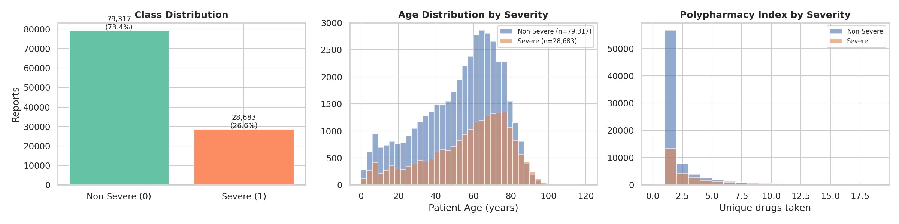
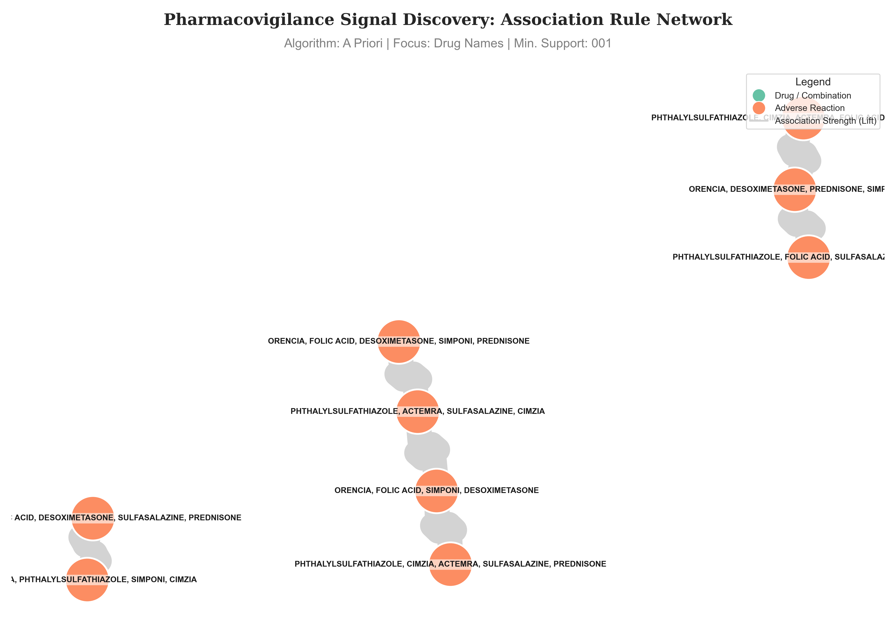
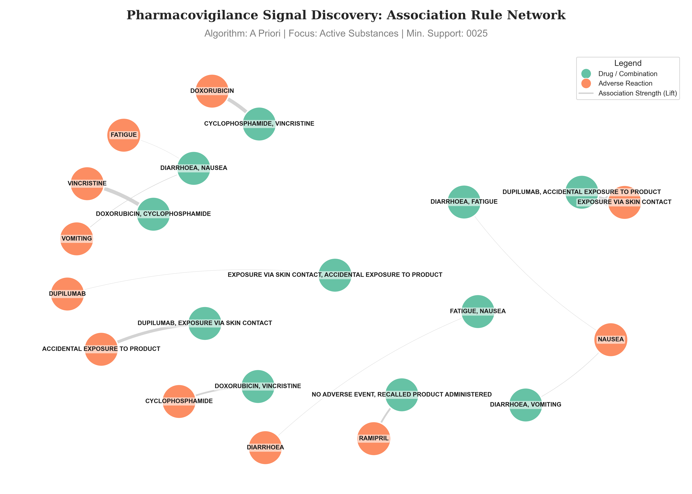
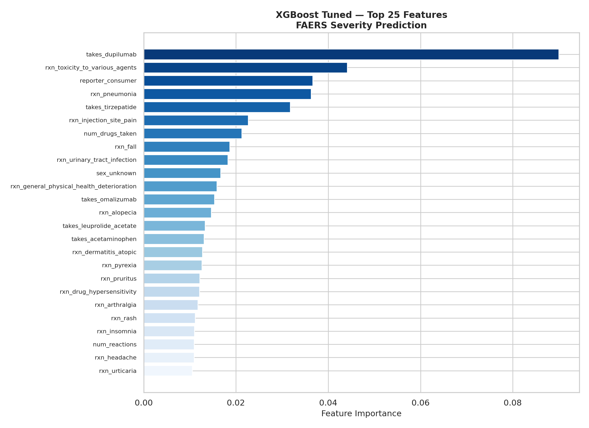
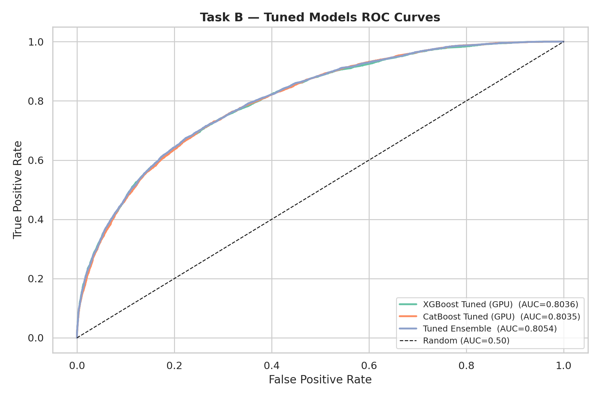
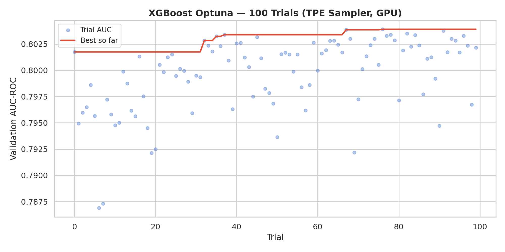
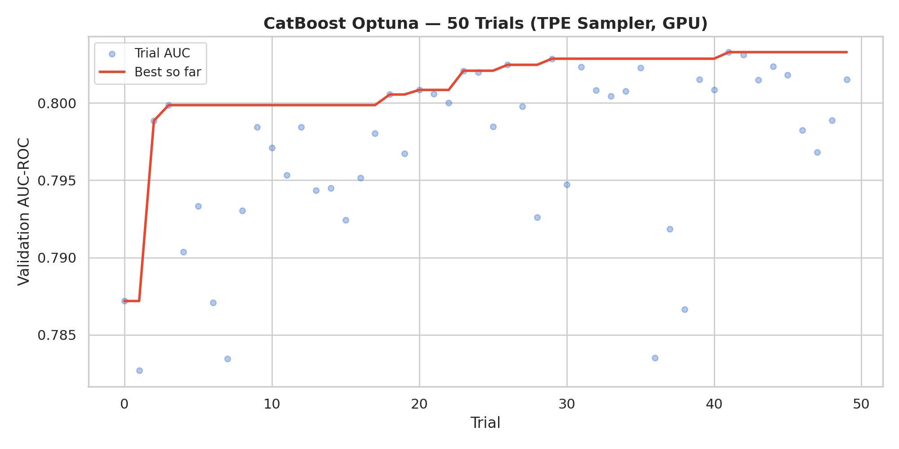
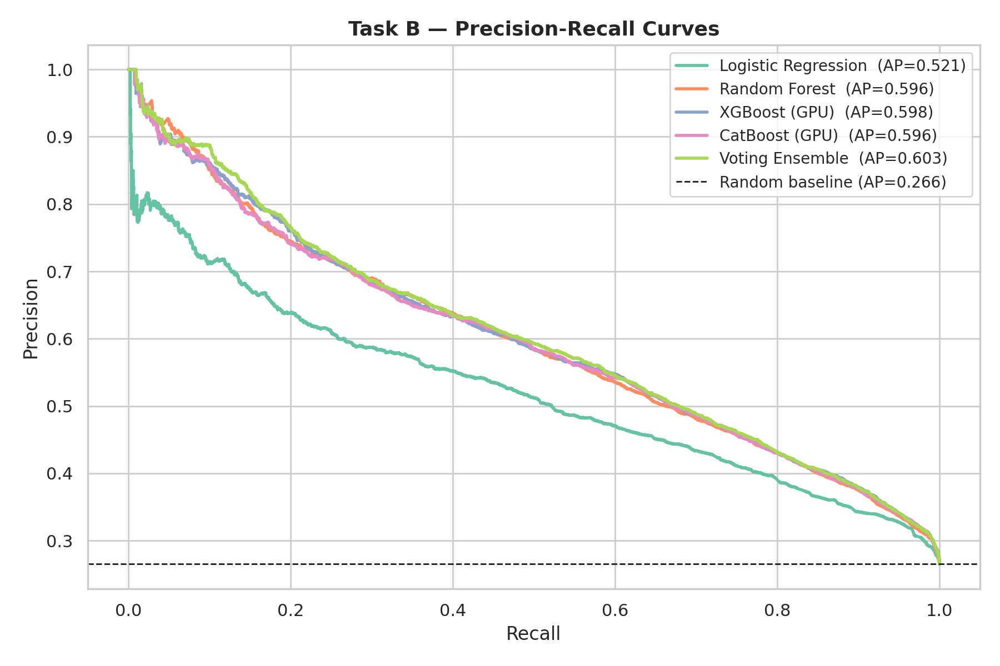
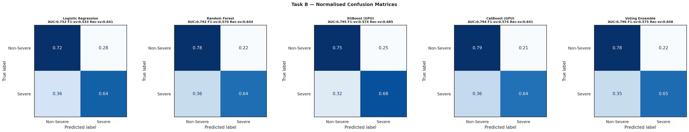

Association Rule Mining + Severity Classification on 108,000 real FDA adverse event reports
KDD Pipeline: Raw JSON → Drug Interaction Rules → Severity Prediction

Feature distributions — age has 40% NaN (preserved for per-model imputation), class imbalance 73/27, polypharmacy index
activesubstance appears as dict or list
across quarters — custom parser handles both formats
| Field | Used in | What it is |
|---|---|---|
safetyreportid |
Both | Transaction ID |
activesubstancename |
Both | Generic drug name |
reactionmeddrapt |
Both | MedDRA adverse reaction term |
patientonsetage / sex |
B only | Demographics |
seriousnessdeath / hospitalization |
B only | TARGET variable |
{METHOTREXATE, PREDNISONE, NAUSEA, FATIGUE}METHOTREXATE → RHEUMATOID ARTHRITIS
support=0.001: 352,484 rules, max lift 851 — statistical noise, not drug signals
| Config | Support | Outcome |
|---|---|---|
| Active Sub. (Apriori) | 0.001 | MemoryError |
| Active Sub. (FP-Growth) | 0.001 | MemoryError |
| Drug Names (FP-Growth) | 0.001 | MemoryError |
| Drug Names (Apriori) | 0.001 | 352k rules, lift 851 |
| Active Sub. (Apriori) | 0.0025 | 13 rules, lift 223 |
| Active Sub. (FP-Growth) | 0.0025 | 13 rules, lift 223 |

Apriori — 13 rules · max lift 223.45 · FP-Growth: identical output — validates correctness
● Teal = drugs · ● Coral = adverse reactions · Edge thickness ∝ lift
DUPILUMAB + ACCIDENTAL EXPOSURE → SKIN CONTACTCYCLOPHOSPHAMIDE + DOXORUBICIN → VINCRISTINE (R-CHOP chemo, lift
162×)

XGBoost (Optuna-tuned) — Top 25 features by information gain
has_drug_drug_interaction = 1 → known high-lift combohas_drug_drug_interaction — drug combo matchhas_drug_reaction_rule — drug→reaction matchnum_matching_rules — how many rules firemax_interaction_lift — strongest rule activated| Feature group | Count |
|---|---|
| Demographics (age, sex) | 4 |
| Polypharmacy index | 1 |
| Top-15 drug flags (binary) | 15 |
| Drug characterization | 2 |
| Top-50 MedDRA reaction flags | 50 |
| Reporter qualification | 4 |
| Task A interaction features | 4 |
| Total | 80 → 71 after leakage removal |
rxn_hospitalisation appeared as the #2 most important feature
in early XGBoost (10.7% gain).seriousnesshospitalization=1 — which IS the target variable.
ROC curves — all models (tuned shown for reference) · dashed = random baseline
| Model | AUC-ROC | F1-severe |
|---|---|---|
| Logistic Regression | 0.752 | 0.533 |
| Random Forest | 0.792 | 0.570 |
| XGBoost (GPU, 2.6s) | 0.795 | 0.574 |
| CatBoost (GPU, 2.5s) | 0.794 | 0.574 |
| Voting Ensemble | 0.796 | 0.575 |
class_weight='balanced'.
XGBoost/CatBoost handle imbalance natively and train in <3s on GPU.

XGBoost: 100 trials — Bayesian TPE convergence

CatBoost: 50 trials — convergence
seed=42, fully reproducible.| Model | Baseline | Tuned | Δ |
|---|---|---|---|
| XGBoost ⚡ | 0.795 | 0.804 | +0.009 |
| CatBoost ⚡ | 0.794 | 0.804 | +0.010 |
| Tuned Ensemble | 0.796 | 0.805 | +0.009 |

Precision-Recall curves — more informative than accuracy for imbalanced data

Normalized confusion matrices — all 5 models. Focus: Tuned Ensemble (rightmost)
| Proposal commitment | Delivered | |
|---|---|---|
| FAERS data >100k rows | 108,000 reports | ✓ |
| Apriori + FP-Growth comparison | Identical 13 rules — mathematical validation | ✓ |
| Sensitivity analysis | 0.001→0.0025; MemoryError confirmed combinatorial explosion | ✓ |
| Severity classifier (LR + RF) | 5 models including GPU-accelerated boosting | ✓ |
| SVM comparison | SVM collapsed (AUC 0.63) → replaced with XGBoost/CatBoost, justified | ✓ |
| AUC-PR + F1 evaluation | AUC-ROC, AP, F1, Recall, Precision, PR curves, confusion matrices | ✓ |
| 70/30 holdout | 70/10/20 train/val/test — val used only for threshold tuning | ✓ |
| Not in proposal | Optuna tuning · GPU · leakage detection · Task A→B bridge | ✓ bonus |